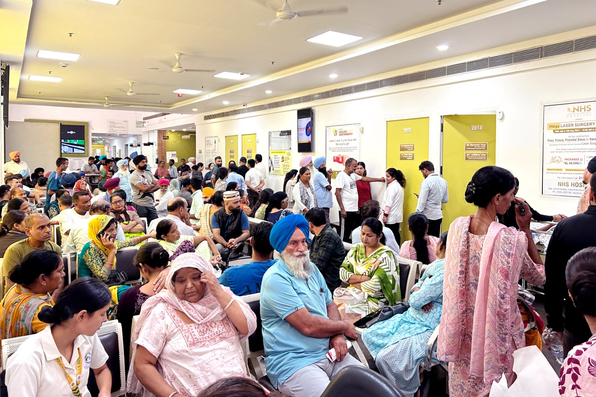
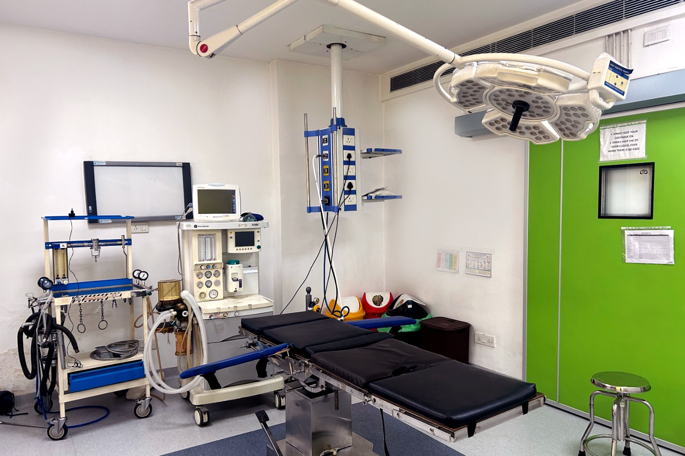
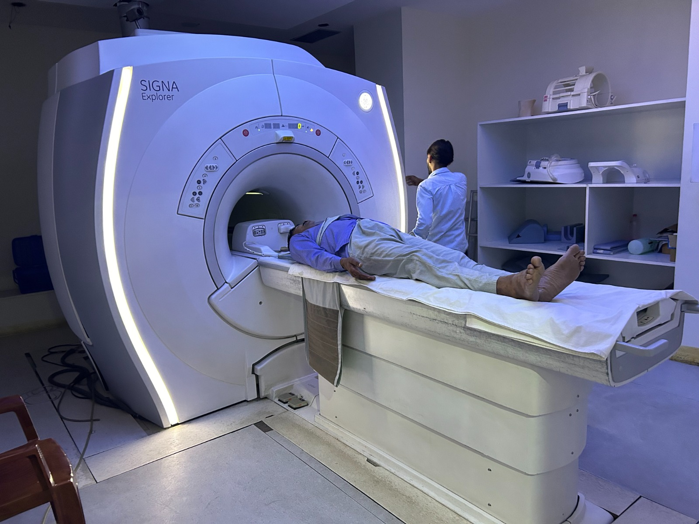
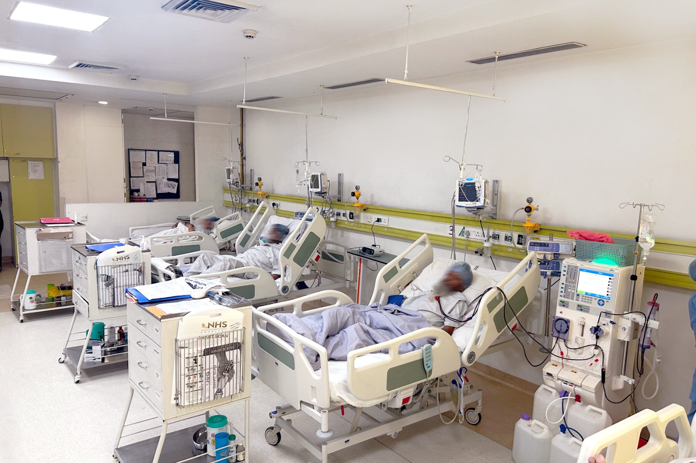
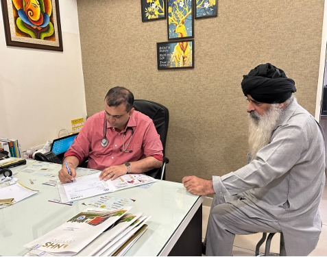
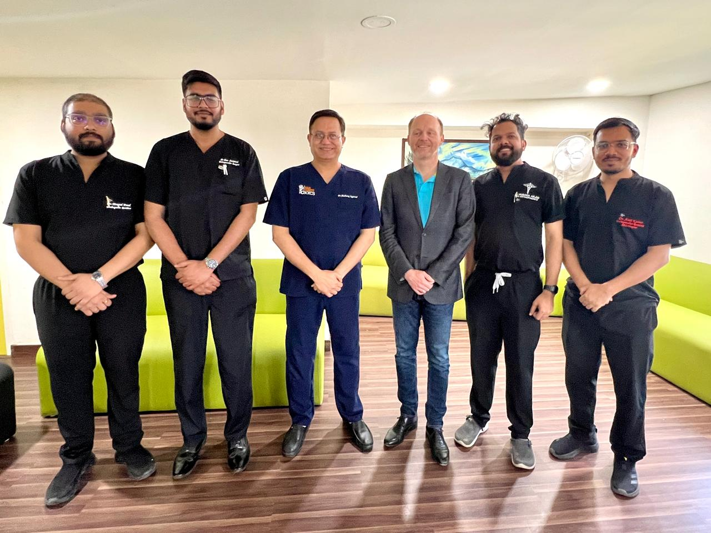
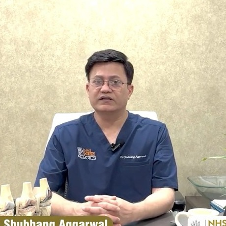
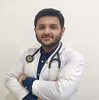
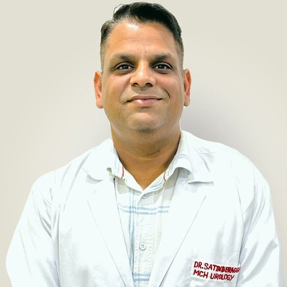
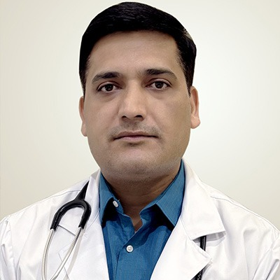

Have a look around before you comeਆਉਣ ਤੋਂ ਪਹਿਲਾਂ ਹਸਪਤਾਲ ਦੇਖ ਲਓ
Photographs from the hospital — the outpatient department, imaging, the theatres and the wards.ਹਸਪਤਾਲ ਦੀਆਂ ਤਸਵੀਰਾਂ — OPD, ਸਕੈਨ ਵਿਭਾਗ, ਆਪਰੇਸ਼ਨ ਥੀਏਟਰ ਤੇ ਵਾਰਡ।






Treatments we are known forਸਾਡੇ ਮੁੱਖ ਇਲਾਜ
Five institutes, each led by a senior consultant. Pick the one closest to your problem.ਪੰਜ ਵਿਭਾਗ, ਹਰੇਕ ਦੀ ਅਗਵਾਈ ਸੀਨੀਅਰ ਡਾਕਟਰ ਕਰਦੇ ਹਨ।
Robotic knee & hip replacementਰੋਬੋਟਿਕ ਗੋਡਾ ਤੇ ਚੂਲਾ ਬਦਲਣਾ
Total and half knee replacement, hip replacement, sports injuries, scoliosis and trauma care.ਪੂਰਾ ਤੇ ਅੱਧਾ ਗੋਡਾ ਬਦਲਣਾ, ਚੂਲਾ ਬਦਲਣਾ, ਖੇਡਾਂ ਦੀਆਂ ਸੱਟਾਂ, ਰੀੜ੍ਹ ਦੀ ਟੇਢ ਤੇ ਹਾਦਸੇ ਦਾ ਇਲਾਜ।
Joint pain consultationਗੋਡੇ ਦੇ ਦਰਦ ਦੀ ਸਲਾਹ Cardiac sciencesਦਿਲ ਦੇ ਰੋਗCardiology & second opinionਦਿਲ ਦਾ ਇਲਾਜ ਤੇ ਦੂਜੀ ਰਾਏ
Angiography and angioplasty, pacemakers, and a written review of reports if a stent has been advised.ਐਂਜੀਓਗ੍ਰਾਫ਼ੀ ਤੇ ਐਂਜੀਓਪਲਾਸਟੀ, ਪੇਸਮੇਕਰ, ਅਤੇ ਜੇ ਸਟੰਟ ਪਾਉਣ ਦੀ ਸਲਾਹ ਮਿਲੀ ਹੈ ਤਾਂ ਰਿਪੋਰਟਾਂ ਦੀ ਲਿਖਤੀ ਦੂਜੀ ਰਾਏ।
Report review in 24–48 hours24–48 ਘੰਟਿਆਂ ਵਿੱਚ ਰਿਪੋਰਟ ਦੀ ਜਾਂਚ Urologyਪਿਸ਼ਾਬ ਤੇ ਗੁਰਦਾLaser treatment for kidney stonesਗੁਰਦੇ ਦੀ ਪੱਥਰੀ ਦਾ ਲੇਜ਼ਰ ਇਲਾਜ
Holmium laser, RIRS, URS and PCNL for stones; HoLEP for an enlarged prostate. No open incision.ਪੱਥਰੀ ਲਈ ਹੋਲਮੀਅਮ ਲੇਜ਼ਰ, RIRS, URS ਤੇ PCNL; ਵਧੇ ਹੋਏ ਪ੍ਰੋਸਟੇਟ ਲਈ HoLEP। ਖੁੱਲ੍ਹਾ ਚੀਰਾ ਨਹੀਂ।
Day-care in suitable casesਢੁਕਵੇਂ ਕੇਸਾਂ ਵਿੱਚ ਉਸੇ ਦਿਨ ਛੁੱਟੀ Nephrologyਗੁਰਦੇ ਦੇ ਰੋਗDialysis & kidney careਡਾਇਲਸਿਸ ਤੇ ਗੁਰਦੇ ਦੀ ਸੰਭਾਲ
Maintenance haemodialysis, critical care nephrology, renal biopsy and long-term kidney treatment.ਨਿਯਮਿਤ ਡਾਇਲਸਿਸ, ICU ਵਿੱਚ ਗੁਰਦੇ ਦਾ ਇਲਾਜ, ਗੁਰਦੇ ਦੀ ਬਾਇਓਪਸੀ ਤੇ ਲੰਮੇ ਸਮੇਂ ਦਾ ਇਲਾਜ।
Scheduled & emergency slotsਤੈਅ ਸਮੇਂ ਤੇ ਐਮਰਜੈਂਸੀ ਸਲਾਟ Gastroenterologyਪੇਟ ਤੇ ਜਿਗਰEndoscopy, colonoscopy & liver careਐਂਡੋਸਕੋਪੀ, ਕੋਲਨੋਸਕੋਪੀ ਤੇ ਜਿਗਰ ਦਾ ਇਲਾਜ
Endoscopy, colonoscopy, ERCP and painless FibroScan for fatty liver, plus laser treatment for piles.ਐਂਡੋਸਕੋਪੀ, ਕੋਲਨੋਸਕੋਪੀ, ERCP ਅਤੇ ਚਰਬੀ ਵਾਲੇ ਜਿਗਰ ਲਈ ਬਿਨਾਂ ਦਰਦ ਫ਼ਾਈਬਰੋਸਕੈਨ, ਨਾਲੇ ਬਵਾਸੀਰ ਦਾ ਲੇਜ਼ਰ ਇਲਾਜ।
Mostly day-care proceduresਬਹੁਤੇ ਕੰਮ ਡੇ-ਕੇਅਰ ਵਿੱਚTalk to the appointment deskਸਾਡੇ ਕਾਊਂਟਰ ਨਾਲ ਗੱਲ ਕਰੋ
Describe the problem and we will tell you which specialist to see — and which reports to bring.ਆਪਣੀ ਤਕਲੀਫ਼ ਦੱਸੋ, ਅਸੀਂ ਦੱਸਾਂਗੇ ਕਿਹੜੇ ਡਾਕਟਰ ਨੂੰ ਮਿਲਣਾ ਹੈ।
Call 0181-4633333ਫ਼ੋਨ ਕਰੋ 0181-4633333Meet our consultantsਸਾਡੇ ਸੀਨੀਅਰ ਡਾਕਟਰ

Dr. Shubhang Aggarwalਡਾ. ਸ਼ੁਭੰਗ ਅਗਰਵਾਲ
Orthopaedics & roboticsਹੱਡੀਆਂ ਤੇ ਰੋਬੋਟਿਕ ਸਰਜਰੀ

Dr. Sahil Sareenਡਾ. ਸਾਹਿਲ ਸਰੀਨ
Consultant cardiologistਦਿਲ ਦੇ ਰੋਗਾਂ ਦੇ ਮਾਹਿਰ

Dr. Satinder Pal Aggarwalਡਾ. ਸਤਿੰਦਰ ਪਾਲ ਅਗਰਵਾਲ
Urology & transplant surgeryਪਿਸ਼ਾਬ ਰੋਗ ਤੇ ਟਰਾਂਸਪਲਾਂਟ

Dr. Sanjay Kumar Sharmaਡਾ. ਸੰਜੇ ਕੁਮਾਰ ਸ਼ਰਮਾ
Consultant nephrologistਗੁਰਦੇ ਰੋਗਾਂ ਦੇ ਮਾਹਿਰ

Dr. Anuj Aroraਡਾ. ਅਨੁਜ ਅਰੋੜਾ
Consultant gastroenterologistਪੇਟ ਤੇ ਜਿਗਰ ਰੋਗਾਂ ਦੇ ਮਾਹਿਰ
"The doctors explained every step and the staff followed up after we went home. Getting the consultation, scan and admission done in the same building saved us days.""ਡਾਕਟਰਾਂ ਨੇ ਹਰ ਗੱਲ ਸਮਝਾਈ ਤੇ ਸਟਾਫ਼ ਨੇ ਘਰ ਜਾਣ ਮਗਰੋਂ ਵੀ ਖ਼ਬਰ ਲਈ। ਸਲਾਹ, ਸਕੈਨ ਤੇ ਦਾਖ਼ਲਾ ਇੱਕੋ ਇਮਾਰਤ ਵਿੱਚ ਹੋ ਜਾਣ ਨਾਲ ਕਈ ਦਿਨ ਬਚ ਗਏ।"
Family member of a patient, Jalandharਇੱਕ ਮਰੀਜ਼ ਦਾ ਪਰਿਵਾਰਕ ਮੈਂਬਰ, ਜਲੰਧਰ
Common questionsਆਮ ਸਵਾਲ
Can't find your answer here? Call the appointment desk any time during OPD hours.ਜਵਾਬ ਨਹੀਂ ਮਿਲਿਆ? OPD ਸਮੇਂ ਵਿੱਚ ਕਾਊਂਟਰ ਨੂੰ ਫ਼ੋਨ ਕਰੋ।
Call 0181-4633333ਫ਼ੋਨ ਕਰੋ 0181-4633333Do I need to book before coming to OPD?ਕੀ OPD ਲਈ ਪਹਿਲਾਂ ਬੁਕਿੰਗ ਲੋੜੀਂਦੀ ਹੈ?+
Walk-ins are welcome, but booking ahead means a shorter wait and the right consultant is available.ਸਿੱਧੇ ਆਉਣਾ ਵੀ ਠੀਕ ਹੈ, ਪਰ ਪਹਿਲਾਂ ਬੁੱਕ ਕਰਨ ਨਾਲ ਘੱਟ ਉਡੀਕ ਹੁੰਦੀ ਹੈ।
Which reports should I bring?ਕਿਹੜੀਆਂ ਰਿਪੋਰਟਾਂ ਲਿਆਵਾਂ?+
Bring any past scans, blood reports and current medicines. The desk will tell you if more are needed.ਪਹਿਲਾਂ ਦੇ ਸਕੈਨ, ਖ਼ੂਨ ਦੀ ਜਾਂਚ ਤੇ ਚੱਲ ਰਹੀਆਂ ਦਵਾਈਆਂ ਲਿਆਓ।
Is cashless insurance accepted?ਕੀ ਕੈਸ਼ਲੈਸ ਬੀਮਾ ਚੱਲਦਾ ਹੈ?+
Yes — most TPAs and select government schemes. Our desk manages approvals on your behalf.ਹਾਂ — ਬਹੁਤੇ TPA ਤੇ ਕੁਝ ਸਰਕਾਰੀ ਸਕੀਮਾਂ। ਮਨਜ਼ੂਰੀ ਸਾਡਾ ਕਾਊਂਟਰ ਸੰਭਾਲਦਾ ਹੈ।
Is help available in Punjabi?ਕੀ ਪੰਜਾਬੀ ਵਿੱਚ ਮਦਦ ਮਿਲਦੀ ਹੈ?+
Yes, our front desk and most consultants converse comfortably in Punjabi and Hindi.ਹਾਂ, ਸਾਡਾ ਕਾਊਂਟਰ ਤੇ ਬਹੁਤੇ ਡਾਕਟਰ ਪੰਜਾਬੀ ਤੇ ਹਿੰਦੀ ਵਿੱਚ ਗੱਲ ਕਰਦੇ ਹਨ।